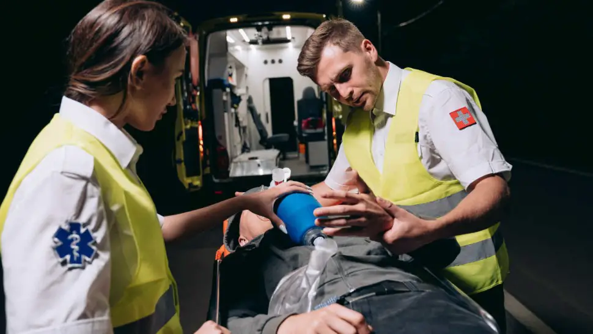

Arrêt cardiaque : causes, symptômes, prévention et nouveautés

Au classement des urgences médicales, l’arrêt cardiaque inopiné représente l’urgence la plus absolue qui soit. Chaque année en France, il existe environ 40 000 cas d’arrêt cardiaque inopiné [1].
Cette pathologie est grevée d’une mortalité estimée autour de 90% [2]. Elle touche deux fois plus les hommes que les femmes avec un âge moyen estimé à 60 ans. La survie de ces patients est extrêmement dépendante des conditions dans lesquelles se déroule l’évènement, de la présence de témoins sur place et de la formation aux gestes et aux soins d’urgence de ces témoins.
La prise en charge d’un arrêt cardiaque extra hospitalier diffère selon le pays. Aux États-Unis, une stratégie dite de « scoop and run » consistant en un transfert non médicalisé en urgence vers un centre hospitalier est préconisée. En France, et plus généralement en Europe, la médication des secours en pré hospitalier impose une stratégie qui peut être nommée « stay and play », consistant en un diagnostic et une prise en charge spécialisée pour orienter le patient vers le centre de référence.

Sommaire
- Quelle est la différence entre crise cardiaque, arrêt cardiaque, arrêt cardio respiratoire, malaise cardiaque, mort subite,... ?
- Quelles sont les causes d'une crise cardiaque et d’un arrêt cardiaque ?
- Symptômes : quel est le premier signe d'une crise cardiaque ou d’un arrêt cardiaque ?
- Comment meurt-on d'un arrêt cardiaque ?
- Quels médicaments peuvent provoquer un arrêt cardiaque ?
- Que faire en cas d'arrêt cardiaque ?
- Comment se déroule la prise en charge après un arrêt cardiaque (massage cardiaque,...) ?
- Que faire en cas d'arrêt cardiaque ? - Vidéo
- Comment prévenir un arrêt cardiaque (hygiène de vie, activités de la vie quotidienne...) ?
- Les nouveautés dans la prise en charge de l'arrêt cardiaque
- Formation arrêt cardiaque intra-hospitalier - Vidéo
- Sources
Quelle est la différence entre crise cardiaque, arrêt cardiaque, arrêt cardio respiratoire, malaise cardiaque, mort subite,... ?

L’arrêt cardiaque est défini par un arrêt de la circulation du sang dans l’organisme et de la ventilation.
Selon les auteurs et les traductions, il est appelé : arrêt cardiaque, arrêt cardiorespiratoire ou arrêt cardiocirculatoire (ACR) .
En pratique, un patient est en arrêt cardiaque lorsqu’il est inconscient, ne bouge pas, ne répond pas à l’appel, ne respire pas ou présente des gasps (respiration anarchique lente inefficace). Les gasps ne doivent pas être confondus avec des mouvements respiratoires au risque de faire méconnaitre l’arrêt cardiorespiratoire. Les gasps ont la même signification que l’arrêt respiratoire. L’absence de pouls ne doit pas être recherchée.
La mort subite se différencie de l’arrêt cardiaque par son caractère inattendu et l’absence de cause extra cardiaque retrouvée. Un arrêt cardiaque soudain ou inopiné non récupéré après des manœuvres de réanimation, chez un patient ne présentant pas de pathologie en phase terminale, est appelé une mort subite.
Ces termes ne doivent pas être confondus avec la notion de crise cardiaque. En France, le terme de crise cardiaque est largement employé pour décrire un infarctus du myocarde. L’infarctus du myocarde entraine une ischémie du cœur par occlusion d’une artère coronaire. A ces définitions, se rajoute l’entité nosologique « syndrome coronarien aigu » qui inclut :
- L’angor instable (le vaisseau n’est pas occlue en totalité et il n’y a pas de souffrance myocardique en aval de la lésion donc pas d’élévation des marqueurs biologiques de type troponine) ;
- L’infarctus du myocarde sans sus décalage du segment ST à l’électrocardiogramme (NSTEMI non - ST elevation myocardial infarction) qui correspond à une occlusion partielle du vaisseau qui engendre une souffrance musculaire sous-jacente (élévation de la troponine) ;
- L’infarctus du myocarde avec sus décalage du segment ST à l’électrocardiogramme (STEMI ST elevation myocardial infarction) qui provoque une nécrose du cœur plus ou moins avec une étendue secondaire à une occlusion complète d’une artère coronaire.
Quelles sont les causes d'une crise cardiaque et d’un arrêt cardiaque ?

Quels médicaments peuvent provoquer un arrêt cardiaque ?
Les médicaments pouvant être l’objet de complications gravissimes de type arrêt cardiaque sont retrouvés dans différentes classes. Un surdosage en dérivés morphiniques (pupilles en myosis serré) ou en benzodiazépines peut entrainer un coma puis un arrêt respiratoire.
Certains médicaments ont une toxicité cardiaque directe comme les antidépresseurs (tricycliques (notamment l’amitriptyline, les inhibiteurs de la recapture de la sérotonine), les antihypertenseurs (bêtabloquants, inhibiteurs calciques), les antipsychotiques (lithium), les antiarythmiques de classe I (flécaine, amiodarone) et IV (inhibiteur de l’enzyme de conversion), les digitaliques ou la quinine [5].
Sources
- Gueugniaud P-Y, Bertrand C, Savary D, Hubert H. [Cardiac arrest in France: Why a national register?]. Presse Med 2011;40:634–8. https://doi.org/10.1016/j.lpm.2011.02.026
- Daya MR, Schmicker RH, Zive DM, Rea TD, Nichol G, Buick JE, et al. Out-of-hospital cardiac arrest survival improving over time: Results from the Resuscitation Outcomes Consortium (ROC). Resuscitation 2015;91:108–15. https://doi.org/10.1016/j.resuscitation.2015.02.003
- Allan KS, Morrison LJ, Pinter A, Tu JV, Dorian P, Rescu Investigators. Unexpected High Prevalence of Cardiovascular Disease Risk Factors and Psychiatric Disease Among Young People With Sudden Cardiac Arrest. J Am Heart Assoc 2019;8:e010330. https://doi.org/10.1161/JAHA.118.010330
- Bhatt DL, Lopes RD, Harrington RA. Diagnosis and Treatment of Acute Coronary Syndromes: A Review. JAMA 2022;327:662–75. https://doi.org/10.1001/jama.2022.0358
- Mégarbane B, Baud F. [Acute poisoning: general management and main causes]. Rev Prat 2006;56:1603–13.
- Cummins RO, Ornato JP, Thies WH, Pepe PE. Improving survival from sudden cardiac arrest: the “chain of survival” concept. A statement for health professionals from the Advanced Cardiac Life Support Subcommittee and the Emergency Cardiac Care Committee, American Heart Association. Circulation 1991;83:1832–47. https://doi.org/10.1161/01.cir.83.5.1832
- Fleischhackl R, Roessler B, Domanovits H, Singer F, Fleischhackl S, Foitik G, et al. Results from Austria’s nationwide public access defibrillation (ANPAD) programme collected over 2 years. Resuscitation 2008;77:195–200. https://doi.org/10.1016/j.resuscitation.2007.11.019
- Yannopoulos D, Bartos J, Raveendran G, Walser E, Connett J, Murray TA, et al. Advanced reperfusion strategies for patients with out-of-hospital cardiac arrest and refractory ventricular fibrillation (ARREST): a phase 2, single centre, open-label, randomised controlled trial. The Lancet 2020;396:1807–16. https://doi.org/10.1016/S0140-6736(20)32338-2